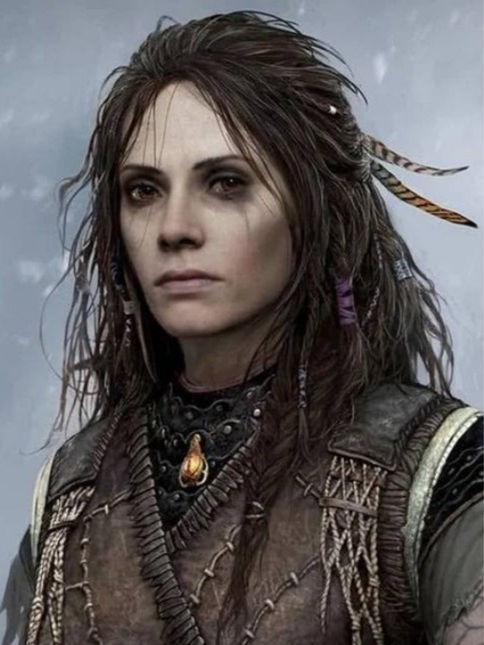

FREYA
Freya, la Bruja del Bosque, es una diosa Vanir desterrada. Antigua líder Vanir y antigua reina de las Valquirias. Ex-esposa de Odín, madre de Baldur y ex-reina de Asgard. Inicialmente aliada de Kratos y su hijo Atreus, se convierte en su enemiga tras el asesinato de su amado pero distanciado hijo. Freya es legendaria por su belleza y por su habilidad con la magia Vanir.